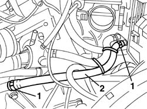
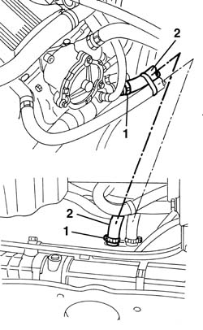
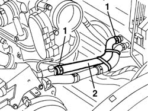

5010A12 engine/heater line - r r
- Path
- Procedures > 50 AUXILIARY UNITS > 5010 CLIMATE CONTROL - MISCELLANEOUS > 5010A heater pipes > 5010A12 engine/heater line - r r
- Kind
- repair procedure (removal / refitting; the operation number is the code)
- Applies to
- engines: 1.6 TS , 1.8 TS, 2.5 V6, 1.9 JTD 8v , 2.4 JTD 10v; all production periods
- Interactive page
- https://sloeber94.github.io/elrnDB-a156/en/#/3238244
Applies to: engines: 1.6 TS , 1.8 TS; all production periods
 Removing
Removing
 Refitting
Refitting1048A34 sleeve(s) from flow meter to air supply capacity case - r + r
Position a suitable container for recovering the coolant fluid.
1. Loosen the pipe retaining bands.
2. Disconnect the pipe and remove it.

Applies to: engines: 1.6 TS , 1.8 TS; all production periods
Refitting
RemovingCheck that the pipe is not damaged and that there are no cracks which would affect the seal.
Reposition the pipe and connect it to the connectors.
If necessary, lubricate the ends of the pipes with vaseline to faciliate refitting.
Tighten the pipe retaining bands.
1048A34 sleeve(s) from flow meter to air supply capacity case - r + r
Refill the engine cooling circuit using the recommended fluid.
 | Type | Component | Name | Qty. |
|---|---|---|---|---|
- | Fluid | COOLANT LEVEL CHECK AND TOP UP | Alfa Romeo Climafluid Super Permanent -40°C | - |
Applies to: engines: 1.9 JTD 8v , 2.4 JTD 10v; all production periods
Removing
RefittingPlace the car on a ramp.
5530B52 Battery DRIP TRAY/SUPPORT - R.R.
Raise the vehicle.
Position a suitable container for recovering the coolant fluid.
Disconnect the lower coolant outlet hose from the radiator and drain the cooling circuit.
1076B50 exhaust pipe attachment to engine - r + r
Lower the vehicle.
1. Loosen the pipe retaining bands.
2. Disconnect the pipe and remove it.

Applies to: engines: 1.9 JTD 8v , 2.4 JTD 10v; all production periods
Refitting
RemovingCheck that the pipe is not damaged and that there are no cracks which would affect the seal.
Reposition the pipe and connect it to the connectors.
If necessary, lubricate the ends of the pipes with vaseline to faciliate refitting.
Tighten the pipe retaining bands.
1076B50 exhaust pipe attachment to engine - r + r
Connect the hose to the radiator.
5530B52 Battery DRIP TRAY/SUPPORT - R.R.
Refill the engine cooling circuit using the recommended fluid.
| Type | Component | Name | Qty. |
|---|---|---|---|---|
- | Fluid | COOLANT LEVEL CHECK AND TOP UP | Alfa Romeo Climafluid Super Permanent -40°C | - |
Remove the car from the ramp.
Applies to: engines: 2.5 V6; all production periods
Removing
Refitting1048A34 sleeve(s) from flow meter to air supply capacity case - r + r
Position a suitable container for recovering the coolant fluid.
1. Loosen the pipe retaining bands.
2. Disconnect the pipe and remove it.

Applies to: engines: 2.5 V6; all production periods
Refitting
RemovingCheck that the pipe is not damaged and that there are no cracks which would affect the seal.
Reposition the pipe and connect it to the connectors.
If necessary, lubricate the ends of the pipes with vaseline to faciliate refitting.
1048A34 sleeve(s) from flow meter to air supply capacity case - r + r
Refill the engine cooling circuit using the recommended fluid.
| Type | Component | Name | Qty. |
|---|---|---|---|---|
- | Fluid | COOLANT LEVEL CHECK AND TOP UP | Alfa Romeo Climafluid Super Permanent -40°C | - |
Topics linked from this page (4)
- 1048A34 sleeve(s) from flow meter to air supply capacity case - r + r
- 1076B50 exhaust pipe attachment to engine - r + r
- 5530B10 battery - r+r
- 5530B52 Battery DRIP TRAY/SUPPORT - R.R.
Topics that link to this page (9)
- 5020A10 heater box - r+r
- 5020A12 heater casing - r+r with facia removed
- 5020A50 heater radiator - r+r
- 5040C10 air conditioner box - r+r
- 5040C12 air conditioner housing - r r with facia disconnected
- 5040C50 air conditioner heater radiator - r+r
- 5505A26 bonnet wiring - r r
- 5505C30 under-facia wiring - r r
- 5505C31 under-facia wiring - r r